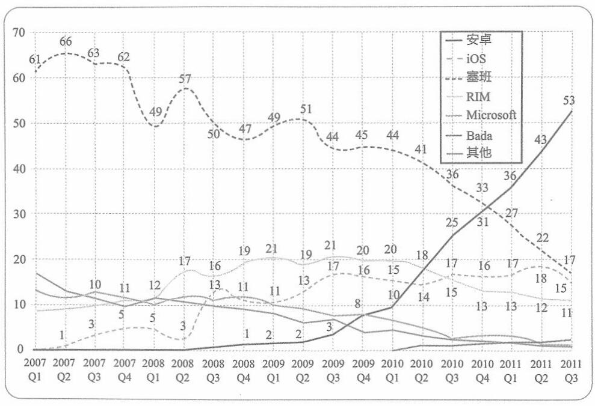

2.开源的安卓
反观安卓，则因其开源特性而广受开发者欢迎。与此同时，谷歌应用商店 Google Play则吸引了全世界大量的程序员、开发者入驻。在这里，他们可以编写安卓 App并轻松地上架，供全球安卓用户下载使用。
虽然安卓生态从0开始，但无论是在供给侧还是在需求侧，它都比塞班生态简单一百倍。
所以，生态之争，不能只看起点。
很快，安卓就超过塞班，成为使用最广泛的智能手机操作系统，而且在开源软件许可协议的帮助下，运行在数百种智能设备上。
|
|
 |
全球智能手机操作系统市场份额( %)
114